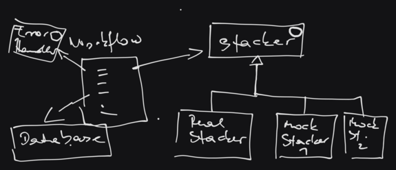
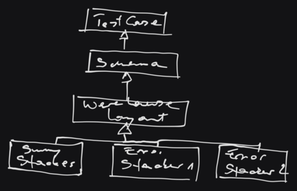

Refactoring, Unit Testing, And Test Driven Development In Python (2024-04-09 - 2024-04-11)¶
Goal¶
While unit testing and test driven development are terms that sound
cool, the mindset and methodology behind these terms is something that
is best acquired by doing. After presenting a homeopathic
amount of slide material, for the
purpose of consolidating terminology (e.g., “What’s a fixture?”), we
start to just do it.
Starting with an untested monolithic toy warehouse application, goal was to transform what we have into something more approachable.
Day 1: Refactoring Of Existing Code, And Basic Unit Testing¶
Basic refactoring. Pull out reusable code into separate units, thereby providing a basis for testable code.
A stacker class, for example
A function that defines an existing warehouse workflow
Mocking away the heavy stuff. During automated testing, we do not want to have a physical stacker involved, so we have to simulate it somehow.
First test: the sunshine test to verify all is ok - provided that no errors occur. This first test is then taken as a written and verifiable definition of the workflow.
Error tests. A basic set of considerations of what can go wrong in a warehouse. One can imagine that the number of possible errors can be high - as opposed to only one sunny case. We start with a handful of obvious tests for those scenarios.
{kind=link}
Day 2: More Tests (Towards An Exact Definition Of Existing Code)¶
Code hygiene. Having an architecture that is tested to a certain amount - a safety net -, we can now focus on little adjustments to the architecture. Eliminate duplicate code, for example, or small adjustments to warehouse layout, this and that.
Error tests, error tests, error tests. Much of the energy of that day went into specifications (err, unit tests) of how to treat errors that might occur - rather than leaving those undefined. Error injection here and there, another mocked-away-stacker implementation that exhibits another subtle error like breaking after the second (not the first) picking operation.
{kind=link}
Day 3: New Functionality - Test-First Development¶
New functionality. We spent the past two days to define behaviour of existing code, by writing tests after the fact. Now it’s time to invert the process, and implement an entirely new warehouse workflow that is backed by tests initially.
In a “requirements meeting”, write a handful of tests to define what we want.
See how that could be implemented.
Adjust the tests, clarifying unclear requirements.
Loop.
Refactoring. The backlog grew while we implemented the new workflow: a number of error cases went untested, existing database logic turned out insufficient.
Afterword¶
By continuously eliminating vast amounts of Angst, we finished the course with a better feeling of how it could work in a real-world application. Knowing that in reality three days are rarely enough 😲